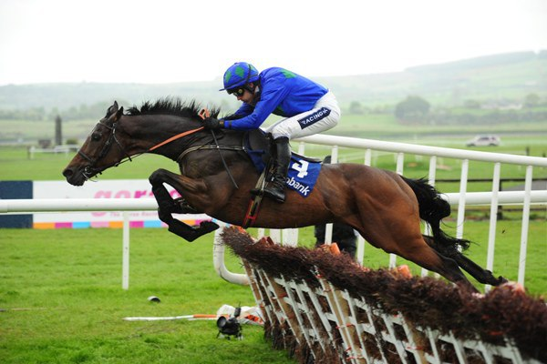
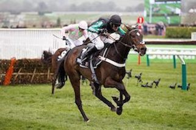
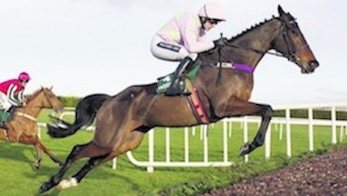

My interests
Horse racing
Out of all sports the one that i have been most interested in over the past 3-4 years is horse racing. my love for the sport started around the time when i first started to gamble when i never really knew what i was doing and the difference between one horse to another but over the last few years i learnt so much about the sport and the people involvled in it and now its became a hobby to me than just somthing to bet on in the bookies.
My favourite type of horse racing
National Hunt racing is usually defined as racing in which horses are required to jump over obstacles. There are races known as National Hunt Flat races, often called bumpers, but these are designed to provide experience to novice horses who have not yet raced. The two main sub-divisions of National Hunt races are fences, otherwise known as Steeplechases, and hurdles. Hurdle obstacles are smaller but with a minimum height of one metre, and are designed to cause minimal falling or injury. Steeplechases are much more challenging, with obstacles of at least 1.4m high. These obstacles are also more solid, as well as being varied, with features such as ditches and water jumps.
Cheltenham festival
my favourite festival of the year is by far the cheltemham festival which takes place on the 12th of march every year and last for four days with a tatal of 28 races
| Tuesday | Wednesday | Thursday | friday |
|---|---|---|---|
| Supreme Novices' Hurdle | Baring Bingham Novices' Hurdle | Golden Miller Novices' Chase | Triumph Hurdle |
| Arkle Challenge Trophy | RSA Chase | Pertemps Final | County Handicap Hurdle |
| Festival Trophy Handicap Chase | Queen Mother Champion Chase | Festival Trophy | Spa Novices' Hurdle |
| Champion Hurdle | Coral Cup | Stayers' Hurdle | Cheltenham Gold Cup |
| David Nicholson Mares' Hurdle | Cross Country Chase | Mildmay of Flete Challenge Cup | Foxhunter Chase |
| Close Brothers Novices' Handicap Chase | Fred Winter Juvenile Novices' Handicap Hurdle | Fulke Walwyn Kim Muir Challenge Cup | Johnny Henderson Grand Annual Chase |
| National Hunt Challenge Cup | Champion Bumper | Dawn Run Mares' Novices' Hurdle | Martin Pipe Conditional Jockeys' Handicap Hurdle |
 